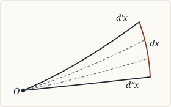
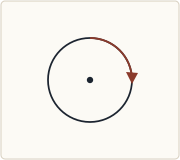

CHAPTER I¶
A Short History of Metageometry (§§ 10–50, pp. 7–53)
Preliminary¶
§ 10. Metageometry began by rejecting the axiom of parallels¶
10. When a long established system is attacked, it usually happens that the attack begins only at a single point, where the weakness of the established doctrine is peculiarly evident. But criticism, when once invited, is apt to extend much further than the most daring, at first, would have wished.
“First cut the liquefaction, what comes last,But Fichte’s clever cut at God himself?”
So it has been with Geometry. The liquefaction of Euclidean orthodoxy is the axiom of parallels, and it was by the refusal to admit this axiom without proof that Metageometry began. The first effort in this direction, that of Legendre [1], was inspired by the hope of deducing this axiom from the others—a hope which, as we now know, was doomed to inevitable failure. Parallels are defined by Legendre as lines in the same plane, such that, if a third line cut them, it makes the sum of the interior and opposite angles equal to two right angles. He proves without difficulty that such lines would not meet, but is unable to prove that non-parallel lines in a plane must meet. Similarly he can prove that the sum of the angles of a triangle cannot exceed two right angles, and that if any one triangle has a sum equal to two right angles, all triangles have the same sum; but he is unable to prove the existence of this one triangle.
§ 11. Its history may be divided into three periods: the synthetic, the metrical and the projective¶
11. Thus Legendre’s attempt broke down; but mere failure could prove nothing. A bolder method, suggested by Gauss, was carried out by Lobatchewsky and Bolyai [2]. If the axiom of parallels is logically deducible from the others, we shall, by denying it and maintaining the rest, be led to contradictions. These three mathematicians, accordingly, attacked the problem indirectly: they denied the axiom of parallels, and yet obtained a logically consistent Geometry. They inferred that the axiom was logically independent of the others, and essential to the Euclidean system. Their works, being all inspired by this motive, may be distinguished as forming the first period in the development of Metageometry.
The second period, inaugurated by Riemann, had a much deeper import: it was largely philosophical in its aims and constructive in its methods. It aimed at no less than a logical analysis of all the essential axioms of Geometry, and regarded space as a particular case of the more general conception of a manifold. Taking its stand on the methods of analytical metrical Geometry, it established two non-Euclidean systems, the first that of Lobatchewsky, the second—in which the axiom of the straight line, in Euclid’s form, was also denied—a new variety, by analogy called spherical. The leading conception in this period is the measure of curvature, a term invented by Gauss, but applied by him only to surfaces. Gauss had shown that free mobility on surfaces was only possible when the measure of curvature was constant; Riemann and Helmholtz extended this proposition to n dimensions, and made it the fundamental property of space.
In the third period, which begins with Cayley, the philosophical motive, which had moved the first pioneers, is less apparent, and is replaced by a more technical and mathematical spirit. This period is chiefly distinguished from the second, in a mathematical point of view, by its method, which is projective instead of metrical. The leading mathematical conception here is the Absolute (Grundgebild), a figure by relation to which all metrical properties become projective. Cayley’s work, which was very brief, and attracted little attention, has been perfected and elaborated by F. Klein, and through him has found general acceptance. Klein has added to the two kinds of non-Euclidean Geometry already known, a third, which he calls elliptic; this third kind closely resembles Helmholtz’s spherical Geometry, but is distinguished by the important difference that, in it, two straight lines meet in only one point [3]. The distinctive mark of the spaces represented by both is that, like the surface of a sphere, they are finite but unbounded. The reduction of metrical to projective properties, as will be proved hereafter, has only a technical importance; at the same time, projective Geometry is able to deal directly with those purely descriptive or qualitative properties of space which are common to Euclid and Metageometry alike. The third period has, therefore, great philosophical importance, while its method has, mathematically, much greater beauty and unity than that of the second; it is able to treat all kinds of space at once, so that every symbolic proposition is, according to the meaning given to the symbols, a proposition in whichever Geometry we choose. This has the advantage of proving that further research cannot lead to contradictions in non-Euclidean systems, unless it at the same moment reveals contradictions in Euclid. These systems, therefore, are logically as sound as that of Euclid himself.
After this brief sketch of the characteristics of the three periods, I will proceed to a more detailed account. It will be my aim to avoid, as far as possible, all technical mathematics, and bring into relief only those fundamental points in the mathematical development, which seem of logical or philosophical importance.
First Period.¶
§ 12. The first period was inaugurated by Gauss,¶
12. The originator of the whole system, Gauss, does not appear, as regards strictly non-Euclidean Geometry, in any of his hitherto published papers, to have given more than results; his proofs remain unknown to us. Nevertheless he was the first to investigate the consequences of denying the axiom of parallels [4], and in his letters he communicated these consequences to some of his friends, among whom was Wolfgang Bolyai. The first mention of the subject in his letters occurs when he was only 18; four years later, in 1799, writing to W. Bolyai, he enunciates the important theorem that, in hyperbolic Geometry, there is a maximum to the area of a triangle. From later writings it appears that he had worked out a system nearly, if not quite, as complete as those of Lobatchewsky and Bolyai [5].
It is important to remember, however, that Gauss’s work on curvature, which was published, laid the foundation for the whole method of the second period, and was undertaken, according to Riemann and Helmholtz [6], with a view to an (unpublished) investigation of the foundations of Geometry. His work in this direction will, owing to its method, be better treated of under the second period, but it is interesting to observe that he stood, like many pioneers, at the head of two tendencies which afterwards diverged.
§ 13. Whose suggestions were developed independently by Lobatchewsky¶
13. Lobatchewsky, a professor in the University of Kasan, first published his results, in their native Russian, in the proceedings of that learned body for the years 1829–1830. Owing to this double obscurity of language and place, they attracted little attention, until he translated them into French [7] and German [8]: even then, they do not appear to have obtained the notice they deserved, until, in 1868, Beltrami unearthed the article in Crelle, and made it the theme of a brilliant interpretation.
In the introduction to his little German book, Lobatchewsky laments the slight interest shown in his writings by his compatriots, and the inattention of mathematicians, since Legendre’s abortive attempt, to the difficulties in the theory of parallels. The body of the work begins with the enunciation of several important propositions which hold good in the system proposed as well as in Euclid: of these, some are in any case independent of the axiom of parallels, while others are rendered so by substituting, for the word “parallel,” the phrase “not intersecting, however far produced.” Then follows a definition, intentionally framed so as to contradict Euclid’s: With respect to a given straight line, all others in the same plane may be divided into two classes, those which cut the given straight line, and those which do not cut it; a line which is the limit between the two classes is called parallel to the given straight line. It follows that, from any external point, two parallels can be drawn, one in each direction. From this starting-point, by the Euclidean synthetic method, a series of propositions are deduced; the most important of these is, that in a triangle the sum of the angles is always less than, or always equal to two right angles, while in the latter case the whole system becomes orthodox. A certain analogy with spherical Geometry—whose meaning and extent will appear later—is also proved, consisting roughly in the substitution of hyperbolic for circular functions.
§ 14. And Bolyai¶
14. Very similar is the system of Johann Bolyai, so similar, indeed, as to make the independence of the two works, though a well-authenticated fact, seem all but incredible. Johann Bolyai first published his results in 1832, in an appendix to a work by his father Wolfgang, entitled; “Appendix, scientiam spatii absolute veram exhibens: a veritate aut falsitate Axiomatis XI. Euclidei (a priori haud unquam decidenda) independentem; adjecta ad casum falsitatis, quadratura circuli geometrica.” Gauss, whose bosom friend he became at college and remained through life, was, as we have seen, the inspirer of Wolfgang Bolyai, and used to say that the latter was the only man who appreciated his philosophical speculations on the axioms of Geometry; nevertheless, Wolfgang appears to have left to his son Johann the detailed working out of the hyperbolic system. The works of both the Bolyai are very rare, and their method and results are known to me only through the renderings of Frischauf and Halsted [9]. Both as to method and as to results, the system is very similar to Lobatchewsky’s, so that neither need detain us here. Only the initial postulates, which are more explicit than Lobatchewsky’s, demand a brief attention. Frischauf’s introduction, which has a philosophical and Newtonian air, begins by setting forth that Geometry deals with absolute (empty) space, obtained by abstracting from the bodies in it, that two figures are called congruent when they differ only in position, and that the axiom of Congruence is indispensable in all determination of spatial magnitudes. Congruence was to refer to geometrical bodies, with none of the properties of ordinary bodies except impenetrability (Erdmann, Axiome der Geometrie, p. 26). A straight line is defined as determined by two of its points [10], and a plane as determined by three. These premisses, with a slight exception as to the straight line, we shall hereafter find essential to every Geometry. I have drawn attention to them, as it is often supposed that non-Euclideans deny the axiom of Congruence, which, here and elsewhere, is never the case. The stress laid on this axiom by Bolyai is probably due to the influence of Gauss, whose work on the curvature of surfaces laid the foundation for the use made of congruence by Helmholtz.
§ 15. The purpose of all three was to show that the axiom of parallels could not be deduced from the others, since its denial did not lead to contradictions¶
15. It is important to remember that, throughout the period we have just reviewed, the purpose of hyperbolic Geometry is indirect: not the truth of the latter, but the logical independence of the axiom of parallels from the rest, is the guiding motive of the work. If, by denying the axiom of parallels while retaining the rest, we can obtain a system free from logical contradictions, it follows that the axiom of parallels cannot be implicitly contained in the others. If this be so, attempts to dispense with the axiom, like Legendre’s, cannot be successful; Euclid must stand or fall with the suspected axiom. Of course, it remained possible that, by further development, latent contradictions might have been revealed in these systems. This possibility, however, was removed by the more direct and constructive work of the second period, to which we must now turn our attention.
Second Period.¶
§ 16. The second period had a more philosophical aim, and was inspired chiefly by Gauss and Herbart¶
16. The work of Lobatchewsky and Bolyai remained, for nearly a quarter of a century, without issue—indeed, the investigations of Riemann and Helmholtz, when they came, appear to have been inspired, not by these men, but rather by Gauss [11] and Herbart. We find, accordingly, very great difference, both of aim and method, between the first period and the second. The former, beginning with a criticism of one point in Euclid’s system, preserved his synthetic method, while it threw over one of his axioms. The latter, on the contrary, being guided by a philosophical rather than a mathematical spirit, endeavoured to classify the conception of space as a species of a more general conception: it treated space algebraically, and the properties it gave to space were expressed in terms, not of intuition, but of algebra. The aim of Riemann and Helmholtz was to show, by the exhibition of logically possible alternatives, the empirical nature of the received axioms. For this purpose, they conceived space as a particular case of a manifold, and showed that various relations of magnitude (Massverhältnisse) were mathematically possible in an extended manifold. Their philosophy, which seems to me not always irreproachable, will be discussed in Chapter II.; here, while it is important to remember the philosophical motive of Riemann and Helmholtz, we shall confine our attention to the mathematical side of their work. In so doing, while we shall, I fear, somewhat maim the system of their thoughts, we shall secure a closer unity of subject, and a more compact account of the purely mathematical development. But there is, in my opinion, a further reason for separating their philosophy from their mathematics. While their philosophical purpose was, to prove that all the axioms of Geometry are empirical, and that a different content of our experience might have changed them all, the unintended result of their mathematical work was, if I am not mistaken, to afford material for an à priori proof of certain axioms. These axioms, though they believed them to be unnecessary, were always introduced in their mathematical works, before laying the foundations of non-Euclidean systems. I shall contend, in Chapter III., that this retention was logically inevitable, and was not merely due, as they supposed, to a desire for conformity with experience. If I am right in this, there is a divergence between Riemann and Helmholtz the philosophers, and Riemann and Helmholtz the mathematicians. This divergence makes it the more desirable to trace the mathematical development apart from the accompanying philosophy.
§ 17. The first work of this period, that of Riemann, invented two new conceptions:¶
17. Riemann’s epoch-making work, “Ueber die Hypothesen, welche der Geometrie zu Grande liegen [12]”, was written, and read to a small circle, in 1854; owing, however, to some changes which he desired to make in it, it remained unpublished till 1867, when it was published by his executors. The two fundamental conceptions, on whose invention rests the historic importance of this dissertation, are that of a manifold, and that of the measure of curvature of a manifold. The former conception serves a mainly philosophical purpose, and is designed, principally, to exhibit space as an instance of a more general conception. On this aspect of the manifold, I shall have much to say in Chapter II.; its mathematical aspect, which alone concerns us here, is less complicated and less fruitful of controversy. The latter conception also serves a double purpose, but its mathematical use is the more prominent. We will consider these two conceptions successively.
§ 18. The first, that of a manifold, is a class-conception, containing space as a species,¶
18. (1) Conception of a manifold. [13] The general purpose of Riemann’s dissertation is, to exhibit the axioms as successive steps in the classification of the species space. The axioms of Geometry, like the marks of a scholastic definition, appear as successive determinations of class-conceptions, ending with Euclidean space. We have thus, from the analytical point of view, about as logical and precise a formulation as can be desired—a formulation in which, from its classificatory character, we seem certain of having nothing superfluous or redundant, and obtain the axioms explicitly in the most desirable form, namely as adjectives of the conception of space. At the same time, it is a pity that Riemann, in accordance with the metrical bias of his time, regarded space as primarily a magnitude [14], or assemblage of magnitudes, in which the main problem consists in assigning quantities to the different elements or points, without regard to the qualitative nature of the quantities assigned. Considerable obscurity thus arises as to the whole nature of magnitude [15]. This view of Geometry underlies the definition of the manifold, as the general conception of which space forms a special case. This definition, which is not very clear, may be rendered as follows.
§ 19. And defined as such that its determinations form a collection of magnitudes¶
19. Conceptions of magnitude, according to Riemann, are possible there only, where we have a general conception, capable of various determinations (Bestimmungsweisen). The various determinations of such a conception together form a manifold, which is continuous or discrete, according as the passage from one determination to another is continuous or discrete. Particular bits of a manifold, or quanta, can be compared by counting when discrete, and by measurement when continuous. “Measurement consists in a superposition of the magnitudes to be compared. If this be absent, magnitudes can only be compared when one is part of another, and then only the more or less, not the how much, can be decided” (p. 256). We thus reach the general conception of a manifold of several dimensions, of which space and colours are mentioned as special cases. To the absence of this conception Riemann attributes the “obscurity” which, on the subject of the axioms, “lasted from Euclid to Legendre” (p. 254). And Riemann certainly has succeeded, from an algebraic point of view, in exhibiting, far more clearly than any of his predecessors, the axioms which distinguish spatial quantity from other quantities with which mathematics is conversant. But by the assumption, from the start, that space can be regarded as a quantity, he has been led to state the problem as: What sort of magnitude is space? rather than: What must space be in order that we may be able to regard it as a magnitude at all? He does not realise, either—indeed in his day there were few who realized—that an elaborate Geometry is possible which does not deal with space as a quantity at all. His definition of space as a species of manifold, therefore, though for analytical purposes it defines, most satisfactorily, the nature of spatial magnitudes, leaves obscure the true ground for this nature, which lies in the nature of space as a system of relations, and is anterior to the possibility of regarding it as a system of magnitudes at all.
But to proceed with the mathematical development of Riemann’s ideas. We have seen that he declared measurement to consist in a superposition of the magnitudes to be compared. But in order that this may be a possible means of determining magnitudes, he continues, these magnitudes must be independent of their position in the manifold (p. 259). This can occur, he says, in several ways, as the simplest of which, he assumes that the lengths of lines are independent of their position. One would be glad to know what other ways are possible: for my part, I am unable to imagine any other hypothesis on which magnitude would be independent of place. Setting this aside, however, the problem, owing to the fact that measurement consists in superposition, becomes identical with the determination of the most general manifold in which magnitudes are independent of place. This brings us to Riemann’s other fundamental conception, which seems to me even more fruitful than that of a manifold.
§ 20. The second, the measure of curvature of a manifold, grew out of curvature in curves and surfaces¶
20. (2) Measure of curvature. This conception is due to Gauss, but was applied by him only to surfaces; the novelty in Riemann’s dissertation was its extension to a manifold of n dimensions. This extension, however, is rather briefly and obscurely expressed, and has been further obscured by Helmholtz’s attempts at popular exposition. The term curvature, also, is misleading, so that the phrase has been the source of more misunderstanding, even among mathematicians, than any other in Pangeometry. It is often forgotten, in spite of Helmholtz’s explicit statement [16], that the “measure of curvature” of an n-dimensional manifold is a purely analytical expression, which has only a symbolic affinity to ordinary curvature. As applied to three-dimensional space, the implication of a four-dimensional “plane” space is wholly misleading; I shall, therefore, generally use the term space-constant instead [17]. Nevertheless, as the conception grew, historically, out of that of curvature, I will give a very brief exposition of the historical development of theories of curvature.
Just as the notion of length was originally derived from the straight line, and extended to other curves by dividing them into infinitesimal straight lines, so the notion of curvature was derived from the circle, and extended to other curves by dividing them into infinitesimal circular arcs. Curvature may be regarded, originally, as a measure of the amount by which a curve departs from a straight line; in a circle, which is similar throughout, this amount is evidently constant, and is measured by the reciprocal of the radius. But in all other curves, the amount of curvature varies from point to point, so that it cannot be measured without infinitesimals. The measure which at once suggests itself is, the curvature of the circle most nearly coinciding with the curve at the point considered. Since a circle is determined by three points, this circle will pass through three consecutive points of the curve. We have thus defined the curvature of any curve, plane or tortuous; for, since any three points lie in a plane, such a circle can always be described.
If we now pass to a surface, what we want is, by analogy, a measure of its departure from a plane. The curvature, as above defined, has become indeterminate, for through any point of the surface we can draw an infinite number of arcs, which will not, in general, all have the same curvature. Let us, then, draw all the geodesics joining the point in question to neighbouring points of the surface in all directions. Since these arcs form a singly infinite manifold, there will be among them, if they have not all the same curvature, one arc of maximum, and one of minimum curvature [18]. The product of these maximum and minimum curvatures is called the measure of curvature of the surface at the point under consideration. To illustrate by a few simple examples: on a sphere, the curvatures of all such lines are equal to the reciprocal of the radius of the sphere, hence the measure of curvature everywhere is the square of the reciprocal of the radius of the sphere. On any surface, such as a cone or a cylinder, on which straight lines can be drawn, these have no curvature, so that the measure of curvature is everywhere zero—this is the case, in particular, with the plane. In general, however, the measure of curvature of a surface varies from point to point.
Gauss, the inventor of this conception [19], proved that, in order that two surfaces may be developable upon each other—i.e. may be such that one can be bent into the shape of the other without stretching or tearing—it is necessary that the two surfaces should have equal measures of curvature at corresponding points. When this is the case, every figure which is possible on the one is, in general, possible on the other, and the two have practically the same Geometry [20]. As a corollary, it follows that a necessary condition, for the free mobility of figures on any surface, is the constancy of the measure of curvature [21]. This condition was proved to be sufficient, as well as necessary, by Minding [22].
§ 21. By means of Gauss’s analytical formula for the curvature of surfaces,¶
21. So far, all has been plain sailing—we have been dealing with purely geometrical ideas in a purely geometrical manner—but we have not, as yet, found any sense of the measure of curvature, in which it can be extended to space, still less to an n-dimensional manifold. For this purpose, we must examine Gauss’s method, which enables us to determine the measure of curvature of a surface at any point as an inherent property, quite independent of any reference to the third dimension.
The method of determining the measure of curvature from within is, briefly, as follows: If any point on the surface be determined by two coordinates, u, v, then small arcs of the surface are given by the formula
$ds^{2}$ = $Edu^{2}$ + 2Fdu dv + $Gdv^{2}$,
where E, F, G are, in general, functions of u, v. [23] From this formula alone, without reference to any space outside the surface, we can determine the measure of curvature at the point u, v, as a function of E, F, G and their differentials with respect to u and v. Thus we may regard the measure of curvature of a surface as an inherent property, and the above geometrical definition, which involved a reference to the third dimension, may be dropped. But at this point a caution is necessary. It will appear in Chap. III. (§ 176), that it is logically impossible to set up a precise coordinate system, in which the coordinates represent spatial magnitudes, without the axiom of Free Mobility, and this axiom, as we have just seen, holds on surfaces only when the measure of curvature is constant. Hence our definition of the measure of curvature will only be really free from reference to the third dimension, when we are dealing with a surface of constant measure of curvature—a point which Riemann entirely overlooks. This caution, however, applies only in space, and if we take the coordinate system as presupposed in the conception of a manifold, we may neglect the caution altogether—while remembering that the possibility of a coordinate system in space involves axioms to be investigated later. We can thus see how a meaning might be found, without reference to any higher dimension, for a constant measure of curvature of three-dimensional space, or for any measure of curvature of an n-dimensional manifold in general.
§ 22. Which enables us to define a constant measure of curvature of a three-dimensional space without reference to a fourth dimension¶
22. Such a meaning is supplied by Riemann’s dissertation, to which, after this long digression, we can now return. We may define a continuous manifold as any continuum of elements, such that a single element is defined by n continuously variable magnitudes. This definition does not really include space, for coordinates in space do not define a point, but its relations to the origin, which is itself arbitrary. It includes, however, the analytical conception of space with which Riemann deals, and may, therefore, be allowed to stand for the moment. Riemann then assumes that the difference—or distance, as it may be loosely called—between any two elements is comparable, as regards magnitude, to the difference between any other two. He assumes further, what it is Helmholtz’s merit to have proved, that the difference ds between two consecutive elements can be expressed as the square root of a quadratic function of the differences of the coordinates: i.e.
$ds^{2}$ = $\sum_{1}^{n}$ $\sum_{1}^{n}$ $a_{ik} dx_{i}.dx_{k}$ ,
where the coefficients $a_{ik}$ are, in general, functions of the coordinates $x_{1} x_{2} \dots x$_{n$}$. [24] The question is: How are we to obtain a definition of the measure of curvature out of this formula? It is noticeable, in the first place, that, just as in a surface we found an infinite number of radii of curvature at a point, so in a manifold of three or more dimensions we must find an infinite number of measures of curvature at a point, one for every two-dimensional manifold passing through the point, and contained in the higher manifold. What we have first to do, therefore, is to define such two-dimensional manifolds. They must consist, as we saw on the surface, of a singly infinite series of geodesics through the point. Now a geodesic is completely determined by one point and its direction at that point, or by one point and the next consecutive point. Hence a geodesic through the point considered is determined by the ratios of the increments of coordinates, $dx_{1} dx_{2} \dots dx_{n}$. Suppose we have two such geodesics, in which the i′th increments are respectively $d'x_{i}$ and $d''x_{i}$. Then all the geodesics given by
$dx_{i}$ = λ′$d'x_{i}$ + λ″$d''x_{i}$

Fig. 1 (p. 21, § 22) — Singly infinite pencil of geodesics $dx_i = \lambda' d'x_i + \lambda'' d''x_i$ forming a 2-manifold.¶
form a singly infinite series, since they contain one parameter, namely λ′: λ″. Such a series of geodesics, therefore, must form a two-dimensional manifold, with a measure of curvature in the ordinary Gaussian sense. This measure of curvature can be determined from the above formula for the elementary arc, by the help of Gauss’s general formula alluded to above. We thus obtain an infinite number of measures of curvature at a point, but from $\frac{n.(n - 1)}{2}$ of these, the rest can be deduced (Riemann, Gesammelte Werke, p. 262). When all the measures of curvature at a point are constant, and equal to all the measures of curvature at any other point, we get what Riemann calls a manifold of constant curvature. In such a manifold free mobility is possible, and positions do not differ intrinsically from one another. If a be the measure of curvature, the formula for the arc becomes, in this case,
$ds^{2}$ = Σ$dx^{2}$ / (1 + $\frac{a}{4}$ Σ$x^{2}$)$^2$.
In this case only, as I pointed out above, can the term “measure of curvature” be properly applied to space without reference to a higher dimension, since free mobility is logically indispensable to the existence of quantitative or metrical Geometry.
§ 23. The main result of Riemann’s mathematical work was to show that, if magnitudes are independent of place, the measure of curvature of space must be constant¶
23. The mathematical result of Riemann’s dissertation may be summed up as follows. Assuming it possible to apply magnitude to space, i.e. to determine its elements and figures by means of algebraical quantities, it follows that space can be brought under the conception of a manifold, as a system of quantitatively determinable elements. Owing, however, to the peculiar nature of spatial measurement, the quantitative determination of space demands that magnitudes shall be independent of place—in so far as this is not the case, our measurement will be necessarily inaccurate. If we now assume, as the quantitative relation of distance between two elements, the square root of a quadratic function of the coordinates—a formula subsequently proved by Helmholtz and Lie—then it follows, since magnitudes are to be independent of place, that space must, within the limits of observation, have a constant measure of curvature, or must, in other words, be homogeneous in all its parts. In the infinitesimal, Riemann says (p. 267), observation could not detect a departure from constancy on the part of the measure of curvature; but he makes no attempt to show how Geometry could remain possible under such circumstances, and the only Geometry he has constructed is based entirely on Free Mobility. I shall endeavour to prove, in Chapter III., that any metrical Geometry, which should endeavour to dispense with this axiom, would be logically impossible. At present I will only point out that Riemann, in spite of his desire to prove that all the axioms can be dispensed with, has nevertheless, in his mathematical work, retained three fundamental axioms, namely, Free Mobility, the finite integral number of dimensions, and the axiom that two points have a unique relation, namely distance. These, as we shall see hereafter, are retained, in actual mathematical work, by all metrical Metageometers, even when they believe, like Riemann and Helmholtz, that no axioms are philosophically indispensable.
§ 24. Helmholtz, who was more of a philosopher than a mathematician,¶
24. Helmholtz, the historically nearest follower of Riemann, was guided by a similar empirical philosophy, and arrived independently at a very similar method of formulating the axioms. Although Helmholtz published nothing on the subject until after Riemann’s death, he had then only just seen Riemann’s dissertation (which was published posthumously), and had worked out his results, so far as they were then completed, in entire independence both of Riemann and of Lobatchewsky. Helmholtz is by far the most widely read of all writers on Metageometry, and his writings, almost alone, represent to philosophers the modern mathematical standpoint on this subject. But his importance is much greater, in this domain, as a philosopher than as a mathematician; almost his only original mathematical result, as regards Geometry, is his proof of Riemann’s formula for the infinitesimal arc, and even this proof was far from rigid, until Lie reformed it by his method of continuous groups. In this chapter, therefore, only two of his writings need occupy us, namely the two articles in the Wissenschaftliche Abhandlungen, Vol. II., entitled respectively “Ueber die thatsächlichen Grundlagen der Geometrie,” 1866 (p. 610 ff.), and “Ueber die Thatsachen, die der Geometrie zum Grunde liegen,” 1868 (p. 618 ff.).
§ 25. Gave a new but incorrect formulation of the essential axioms,¶
25. In the first of these, which is chiefly philosophical, Helmholtz gives hints of his then uncompleted mathematical work, but in the main contents himself with a statement of results. He announces that he will prove Riemann’s quadratic formula for the infinitesimal arc; but for this purpose, he says, we have to start with Congruence, since without it spatial measurement is impossible. Nevertheless, he maintains that Congruence is proved by experience. How we could, without the help of measurement, discover lapses from Congruence, is a point which he leaves undiscussed. He then enunciates the four axioms which he considers essential to Geometry, as follows:
(1) As regards continuity and dimensions. In a space of n dimensions, a point is uniquely determined by the measurement of n continuous variables (coordinates).
(2) As regards the existence of moveable rigid bodies. Between the 2n coordinates of any point-pair of a rigid body, there exists an equation which is the same for all congruent point-pairs. By considering a sufficient number of point-pairs, we get more equations than unknown quantities: this gives us a method of determining the form of these equations, so as to make it possible for them all to be satisfied.
(3) As regards free mobility. Every point can pass freely and continuously from one position to another. From (2) and (3) it follows, that if two systems A and B can be brought into congruence in any one position, this is also possible in every other position.
(4) As regards independence of rotation in rigid bodies (Monodromy). If (n – 1) points of a body remain fixed, so that every other point can only describe a certain curve, then that curve is closed.
These axioms, says Helmholtz, suffice to give, with the axiom of three dimensions, the Euclidean and non-Euclidean systems as the only alternatives. That they suffice, mathematically, cannot be denied, but they seem, in some respects, to go too far. In the first place, there is no necessity to make the axiom of Congruence apply to actual rigid bodies—on this subject I have enlarged in Chapter II. [25] Again, Free Mobility, as distinct from Congruence, hardly needs to be specially formulated: what barrier could empty space offer to a point’s progress? The axiom is involved in the homogeneity of space, which is the same thing as the axiom of Congruence. Monodromy, also, has been severely criticized; not only is it evident that it might have been included in Congruence, but even from the purely analytical point of view, Sophus Lie has proved it to be superfluous [26]. Thus the axiom of Congruence, rightly formulated, includes Helmholtz’s third and fourth axioms and part of his second axiom. All the four, or rather, as much of them as is relevant to Geometry, are consequences, as we shall see hereafter, of the one fundamental principle of the relativity of position.
§ 26. And deduced the quadratic formula for the infinitesimal arc, which Riemann had assumed¶
26. The second article, which is mainly mathematical, supplies the promised proof of the arc-formula, which is Helmholtz’s most important contribution to Geometry. Riemann had assumed this formula, as the simplest of a number of alternatives: Helmholtz proved it to be a necessary consequence of his axioms. The present paper begins with a short repetition of the first, including the statement of the axioms, to which, at the end of the paper, two more are added, (5) that space has three dimensions, and (6) that space is infinite. It is supposed in the text, as also in the first paper, that the measure of curvature cannot be negative, and, consequently, that an infinite space must be Euclidean. This error in both papers is corrected in notes, added after the appearance of Beltrami’s paper on negative curvature. It is a sample of the slightly unprofessional nature of Helmholtz’s mathematical work on this subject, which elicits from Klein the following remarks [27]: “Helmholtz is not a mathematician by profession, but a physicist and physiologist…. From this non-mathematical quality of Helmholtz, it follows naturally that he does not treat the mathematical portion of his work with the thoroughness which one would demand of a mathematician by trade (von Fach).” He tells us himself that it was the physiological study of vision which led him to the question of the axioms, and it is as a physicist that he makes his axioms refer to actual rigid bodies. Accordingly, we find errors in his mathematics, such as the axiom of Monodromy, and the assumption that the measure of curvature must be positive. Nevertheless, the proof of Riemann’s arc-formula is extremely able, and has, on the whole, been substantiated by Lie’s more thorough investigations.
§ 27. Beltrami gave Lobatchewsky’s planimetry a Euclidean interpretation,¶
27. Helmholtz’s other writings on Geometry are almost wholly philosophical, and will be discussed at length in Chapter II. For the present, we may pass to the only other important writer of the second period, Beltrami. As his work is purely mathematical, and contains few controverted points, it need not, despite its great importance, detain us long.
The “Saggio di Interpretazione della Geometria non-Euclidea [28],” which is principally confined to two dimensions, interprets Lobatchewsky’s results by the characteristic method of the second period. It shows, by a development of the work of Gauss and Minding [29], that all the propositions in plane Geometry, which Lobatchewsky had set forth, hold, within ordinary Euclidean space, on surfaces of constant negative curvature. It is strange, as Klein points out [30], that this interpretation, which was known to Riemann and perhaps even to Gauss, should have remained so long without explicit statement. This is the more strange, as Lobatchewsky’s “Géométrie Imaginaire” had appeared in Crelle, Vol. XVII. [31], and Minding’s article, from which the interpretation follows at once, had appeared in Crelle, Vol. XIX. Minding had shewn that the Geometry of surfaces of constant negative curvature, in particular as regards geodesic triangles, could be deduced from that of the sphere by giving the radius a purely imaginary value ia [32]. This result, as we have seen, had also been obtained by Lobatchewsky for his Geometry, and yet it took thirty years for the connection to be brought to general notice.
§ 28. Which is analogous to Cayley’s theory of distance;¶
28. In Beltrami’s Saggio, straight lines are, of course, replaced by geodesics; his coordinates are obtained through a point-by-point correspondence with an auxiliary plane, in which straight lines correspond to geodesics on the surface. Thus geodesics have linear equations, and are always uniquely determined by two points. Distances on the surface, however, are not equal to distances on the plane; thus while the surface is infinite, the corresponding portion of the plane is contained within a certain finite circle. The distance of two points on the surface is a certain function of the coordinates, not the ordinary function of elementary Geometry. These relations of plane and surface are important in connection with Cayley’s theory of distance, which we shall have to consider next. If we were to define distance on the plane as that function of the coordinates which gives the corresponding distance on the surface, we should obtain what Klein calls “a plane with a hyperbolic system of measurement (Massbestimmung)” in which Cayley’s theory of distance would hold. It is evident, however, that the ordinary notion of distance has been presupposed in setting up the coordinate system, so that we do not really get alternative Geometries on one and the same plane. The bearing of these remarks will appear more fully when we come to consider Cayley and Klein.
§ 29. And dealt with n-dimensional spaces of constant negative curvature¶
29. The value of Beltrami’s Saggio, in his own eyes, lies in the intelligible Euclidean sense which it gives to Lobatchewsky’s planimetry: the corresponding system of Solid Geometry, since it has no meaning for Euclidean space, is barely mentioned in this work. In a second paper [33], however, almost contemporaneous with the first, he proceeds to consider the general theory of n-dimensional manifolds of constant negative curvature. This paper is greatly influenced by Riemann’s dissertation; it begins with the formula for the linear element, and proves from this first, that Congruence holds for such spaces, and next, that they have, according to Riemann’s definition, a constant negative measure of curvature. (It is instructive to observe, that both in this and in the former Essay, great stress is laid on the necessity of the Axiom of Congruence.)
This work has less philosophical interest than the former, since it does little more than repeat, in a general form, the results which the Saggio had obtained for two dimensions—results which sink, when extended to n dimensions, to the level of mere mathematical constructions. Nevertheless, the paper is important, both as a restoration of negative curvature, which had been overlooked by Helmholtz, and as an analytical treatment of Lobatchewsky’s results—a treatment which, together with the Saggio, at last restored to them the prominence they deserved.
Third Period.¶
§ 30. The third period abandons the metrical methods of the second, and extrudes the notion of spatial quantity¶
30. The third period differs radically, alike in its methods and aims, and in the underlying philosophical ideas, from the period which it replaced. Whereas everything, in the second period, turned on measurement, with its apparatus of Congruence, Free Mobility, Rigid Bodies, and the rest, these vanish completely in the third period, which, swinging to the opposite extreme, regards quantity as a perfectly irrelevant category in Geometry, and dispenses with congruence and the method of superposition. The ideas of this period, unfortunately, have found no exponent so philosophical as Riemann or Helmholtz, but have been set forth only by technical mathematicians. Moreover the change of fundamental ideas, which is immense, has not brought about an equally great change in actual procedure; for though spatial quantity is no longer a part of projective Geometry, quantity is still employed, and we still have equations, algebraic transformations, and so on. This is apt to give rise to confusion, especially in the mind of the student, who fails to realise that the quantities used, so far as the propositions are really projective, are mere names for points, and not, as in metrical Geometry, actual spatial magnitudes.
Nevertheless, the fundamental difference between this period and the former must strike any one at once. Whereas Riemann and Helmholtz dealt with metrical ideas, and took, as their foundations, the measure of curvature and the formula for the linear element—both purely metrical—the new method is erected on the formulae for transformation of coordinates required to express a given collineation. It begins by reducing all so-called metrical notions—distance, angle, etc.—to projective forms, and obtains, from this reduction, a methodological unity and simplicity before impossible. This reduction depends, however, except where the space-constant is negative, upon imaginary figures—in Euclid, the circular points at infinity; it is moreover purely symbolic and analytical, and must be regarded as philosophically irrelevant. As the question concerning the import of this reduction is of fundamental importance to our theory of Geometry, and as Cayley, in his Presidential Address to the British Association in 1883, formally challenged philosophers to discuss the use of imaginaries, on which it depends, I will treat this question at some length. But first let us see how, as a matter of mathematics, the reduction is effected.
§ 31. Cayley reduced metrical properties to projective properties, relative to a certain conic or quadric, the Absolute;¶
31. We shall find, throughout this period, that almost every important proposition, though misleading in its obvious interpretation, has nevertheless, when rightly interpreted, a wide philosophical bearing. So it is with the work of Cayley, the pioneer of the projective method.
The projective formula for angles, in Euclidean Geometry, was first obtained by Laguerre, in 1853. This formula had, however, a perfectly Euclidean character, and it was left for Cayley to generalize it so as to include both angles and distances in Euclidean and non-Euclidean systems alike [34].
Cayley was, to the last, a staunch supporter of Euclidean space, though he believed that non-Euclidean Geometries could be applied, within Euclidean space, by a change in the definition of distance [35]. He has thus, in spite of his Euclidean orthodoxy, provided the believers in the possibility of non-Euclidean spaces with one of their most powerful weapons. In his “Sixth Memoir upon Quantics” (1859), he set himself the task of “establishing the notion of distance upon purely descriptive principles.” He showed that, with the ordinary notion of distance, it can be rendered projective by reference to the circular points and the line at infinity, and that the same is true of angles [36]. Not content with this, he suggested a new definition of distance, as the inverse sine or cosine of a certain function of the coordinates; with this definition, the properties usually known as metrical become projective properties, having reference to a certain conic, called by Cayley the Absolute. (The circular points are, analytically, a degenerate conic, so that ordinary Geometry forms a particular case of the above.) He proves that, when the Absolute is an imaginary conic, the Geometry so obtained for two dimensions is spherical Geometry. The correspondence with Lobatchewsky, in the case where the Absolute is real, is not worked out: indeed there is, throughout, no evidence of acquaintance with non-Euclidean systems. The importance of the memoir, to Cayley, lies entirely in its proof that metrical is only a branch of descriptive Geometry.
§ 32. And Klein showed that the Euclidean or non-Euclidean systems result, according to the nature of the Absolute;¶
32. The connection of Cayley’s Theory of Distance with Metageometry was first pointed out by Klein [37]. Klein showed in detail that, if the Absolute be real, we get Lobatchewsky’s (hyperbolic) system; if it be imaginary, we get either spherical Geometry or a new system, analogous to that of Helmholtz, called by Klein elliptic; if the Absolute be an imaginary point-pair, we get parabolic Geometry, and if, in particular, the point-pair be the circular points, we get ordinary Euclid. In elliptic Geometry, two straight lines in the same plane meet in only one point, not two as in Helmholtz’s system. The distinction between the two kinds of Geometry is difficult, and will be discussed later.
§ 33. Hence Euclidean space appeared to give rise to all the kinds of Geometry, and the question, which is true, appeared reduced to one of convention¶
33. Since these systems are all obtained from a Euclidean plane, by a mere alteration in the definition of distance, Cayley and Klein tend to regard the whole question as one, not of the nature of space, but of the definition of distance. Since this definition, on their view, is perfectly arbitrary, the philosophical problem vanishes—Euclidean space is left in undisputed possession, and the only problem remaining is one of convention and mathematical convenience [38]. This view has been forcibly expressed by Poincaré: “What ought one to think,” he says, “of this question: Is the Euclidean Geometry true? The question is nonsense.” Geometrical axioms, according to him, are mere conventions: they are “definitions in disguise [39].” Thus Klein blames Beltrami for regarding his auxiliary plane as merely auxiliary, and remarks that, if he had known Cayley’s Memoir, he would have seen the relation between the plane and the pseudosphere to be far more intimate than he supposed [40]. A view which removes the problem entirely from the arena of philosophy demands, plainly, a full discussion. To this discussion we will now proceed.
§ 34. But this view is due to a confusion as to the nature of the coordinates employed¶
34. The view in question has arisen, it would seem, from a natural confusion as to the nature of the coordinates employed. Those who hold the view have not adequately realised, I believe, that their coordinates are not spatial quantities, as in metrical Geometry, but mere conventional signs, by which different points can be distinctly designated. There is no reason, therefore, until we already have metrical Geometry, for regarding one function of the coordinates as a better expression of distance than another, so long as the fundamental addition-equation [41] is preserved. Hence, if our coordinates are regarded as adequate for all Geometry, an indeterminateness arises in the expression of distance, which can only be avoided by a convention. But projective coordinates—so our argument will contend—though perfectly adequate for all projective properties, and entirely free from any metrical presupposition, are inadequate to express metrical properties, just because they have no metrical presupposition. Thus where metrical properties are in question, Beltrami remains justified as against Klein; the reduction of metrical to projective properties is only apparent, though the independence of these last, as against metrical Geometry, is perfectly real.
§ 35. Projective coordinates have been regarded as dependent on distance, and thus really metrical¶
35. But what are projective coordinates, and how are they introduced? This question was not touched upon in Cayley’s Memoir, and it seemed, therefore, as if a logical error were involved in using coordinates to define distance. For coordinates, in all previous systems, had been deduced from distance; to use any existing coordinate system in defining distance was, accordingly, to incur a vicious circle. Cayley mentions this difficulty in a note, where he only remarks, however, that he had regarded his coordinates as numbers arbitrarily assigned, on some system not further investigated, to different points. The difficulty has been treated at length by Sir R. Ball (Theory of the Content, Trans. R. I. A. 1889), who urges that if the values of our coordinates already involve the usual measure of distance, then to give a new definition, while retaining the usual coordinates, is to incur a contradiction. He says (op. cit. p. 1): “In the study of non-Euclidean Geometry I have often felt a difficulty which has, I know, been shared by others. In that theory it seems as if we try to replace our ordinary notion of distance between two points by the logarithm of a certain anharmonic ratio [42]. But this ratio itself involves the notion of distance measured in the ordinary way. How, then, can we supersede our old notion of distance by the non-Euclidean notion, inasmuch as the very definition of the latter involves the former?”
§ 36. But this is not the case, since anharmonic ratio can be projectively defined¶
36. This objection is valid, we must admit, so long as anharmonic ratio is defined in the ordinary metrical manner. It would be valid, for example, against any attempt to found a new definition of distance on Cremona’s account of anharmonic ratio [43], in which it appears as a metrical property unaltered by projective transformation. If a logical error is to be avoided, in fact, all reference to spatial magnitude of any kind must be avoided; for all spatial magnitude, as will be shown hereafter [44], is logically dependent on the fundamental magnitude of distance. Anharmonic ratio and coordinates must alike be defined by purely descriptive properties, if the use afterwards made of them is to be free from metrical presuppositions, and therefore from the objections of Sir R. Ball.
Such a definition has been satisfactorily given by Klein [45], who appeals, for the purpose, to v. Staudt’s quadrilateral construction [46]. By this construction, which I have reproduced in outline in Chapter III. Section A, § 112 ff., we obtain a purely descriptive definition of harmonic and anharmonic ratio, and, given a pair of points, we can obtain the harmonic conjugate to any third point on the same straight line. On this construction, the introduction of projective coordinates is based. Starting with any three points on a straight line, we assign to them arbitrarily the numbers 0, 1, ∞. We then find the harmonic conjugate to the first with respect to 1, ∞, and assign to it the number 2. The object of assigning this number rather than any other, is to obtain the value –1 for the anharmonic ratio of the four numbers corresponding to the four points [47]. We then find the harmonic conjugate to the point 1, with respect to 2, ∞, and assign to it the number 3; and so on. Klein has shown that by this construction, we can obtain any number of points, and can construct a point corresponding to any given number, fractional or negative. Moreover, when two sets of four points have the same anharmonic ratio, descriptively defined [48], the corresponding numbers also have the same anharmonic ratio. By introducing such a numerical system on two straight lines, or on three, we obtain the coordinates of any point in a plane, or in space. By this construction, which is of fundamental importance to projective Geometry, the logical error, upon which Sir R. Ball bases his criticism, is satisfactorily avoided. Our coordinates are introduced by a purely descriptive method, and involve no presupposition whatever as to the measurement of distance.
§ 37. Projective coordinates, being purely descriptive, can give no information as to metrical properties, and the reduction of metrical to projective properties is purely technical¶
37. With this coordinate system, then, to define distance as a certain function of the coordinates is not to be guilty of a vicious circle. But it by no means follows that the definition of distance is arbitrary. All reference to distance has been hitherto excluded, to avoid metrical ideas; but when distance is introduced, metrical ideas inevitably reappear, and we have to remember that our coordinates give no information, primâ facie, as to any of these metrical ideas. It is open to us, of course, if we choose, to continue to exclude distance in the ordinary sense, as the quantity of a finite straight line, and to define the word distance in any way we please. But the conception, for which the word has hitherto stood, will then require a new name, and the only result will be a confusion between the apparent meaning of our propositions, to those who retain the associations belonging to the old sense of the word, and the real meaning, resulting from the new sense in which the word is used.
This confusion, I believe, has actually occurred, in the case of those who regard the question between Euclid and Metageometry as one of the definition of distance. Distance is a quantitative relation, and as such presupposes identity of quality. But projective Geometry deals only with quality—for which reason it is called descriptive—and cannot distinguish between two figures which are qualitatively alike. Now the meaning of qualitative likeness, in Geometry, is the possibility of mutual transformation by a collineation [49]. Any two pairs of points on the same straight line, therefore, are qualitatively alike; their only qualitative relation is the straight line, which both pairs have in common; and it is exactly the qualitative identity of the relations of the two pairs, which enables the difference of their relations to be exhaustively dealt with by quantity, as a difference of distance. But where quantity is excluded, any two pairs of points on the same straight line appear as alike, and even any two sets of three: for any three points on a straight line can be projectively transformed into any other three. It is only with four points in a line that we acquire a projective property distinguishing them from other sets of four, and this property is anharmonic ratio, descriptively defined. The projective Geometer, therefore, sees no reason to give a name to the relation between two points, in so far as this relation is anything over and above the unlimited straight line on which they lie; and when he introduces the notion of distance, he defines it, in the only way in which projective principles allow him to define it, as a relation between four points. As he nevertheless wishes the word to give him the power of distinguishing between different pairs of points, he agrees to take two out of the four points as fixed. In this way, the only variables in distance are the two remaining points, and distance appears, therefore, as a function of two variables, namely the coordinates of the two variable points. When we have further defined our function so that distance may be additive, we have a function with many of the properties of distance in the ordinary sense. This function, therefore, the projective Geometer regards as the only proper definition of distance.
We can see, in fact, from the manner in which our projective coordinates were introduced, that some function of these coordinates must express distance in the ordinary sense. For they were introduced serially, so that, as we proceeded from the zero-point towards the infinity-point, our coordinates continually grew. To every point, a definite coordinate corresponded: to the distance between two variable points, therefore, as a function dependent on no other variables, must correspond some definite function of the coordinates, since these are themselves functions of their points. The function discussed above, therefore, must certainly include distance in the ordinary sense.
But the arbitrary and conventional nature of distance, as maintained by Poincaré and Klein, arises from the fact that the two fixed points, required to determine our distance in the projective sense, may be arbitrarily chosen, and although, when our choice is once made, any two points have a definite distance, yet, according as we make that choice, distance will become a different function of the two variable points. The ambiguity thus introduced is unavoidable on projective principles; but are we to conclude, from this, that it is really unavoidable? Must we not rather conclude that projective Geometry cannot adequately deal with distance? If A, B, C, be three different points on a line, there must be some difference between the relation of A to B and of A to C, for otherwise, owing to the qualitative identity of all points, B and C could not be distinguished. But such a difference involves a relation, between A and B, which is independent of other points on the line; for unless we have such a relation, the other points cannot be distinguished as different. Before we can distinguish the two fixed points, therefore, from which the projective definition starts, we must already suppose some relation, between any two points on our line, in which they are independent of other points; and this relation is distance in the ordinary sense [50]. When we have measured this quantitative relation by the ordinary methods of metrical Geometry, we can proceed to decide what base-points must be chosen, on our line, in order that the projective function discussed above may have the same value as ordinary distance. But the choice of these base-points, when we are discussing distance in the ordinary sense, is not arbitrary, and their introduction is only a technical device. Distance, in the ordinary sense, remains a relation between two points, not between four; and it is the failure to perceive that the projective sense differs from, and cannot supersede, the ordinary sense, which has given rise to the views of Klein and Poincaré. The question is not one of convention, but of the irreducible metrical properties of space. To sum up: Quantities, as used in projective Geometry, do not stand for spatial magnitudes, but are conventional symbols for purely qualitative spatial relations. But distance, quâ quantity, presupposes identity of quality, as the condition of quantitative comparison. Distance in the ordinary sense is, in short, that quantitative relation, between two points on a line, by which their difference from other points can be defined. The projective definition, however, being unable to distinguish a collection of less than four points from any other on the same straight line, makes distance depend on two other points besides those whose relation it defines. No name remains, therefore, for distance in the ordinary sense, and many projective Geometers, having abolished the name, believe the thing to be abolished also, and are inclined to deny that two points have a unique relation at all. This confusion, in projective Geometry, shows the importance of a name, and should make us chary of allowing new meanings to obscure one of the fundamental properties of space.
§ 38. The true connection of Cayley’s measure of distance with non-Euclidean Geometry is that suggested by Beltrami’s Saggio, and worked out by Sir R. Ball,¶
38. It remains to discuss the manner in which non-Euclidean Geometries result from the projective definition of distance, as also the true interpretation to be given to this view of Metageometry. It is to be observed that the projective methods which follow Cayley deal throughout with a Euclidean plane, on which they introduce different measures of distance. Hence arises, in any interpretation of these methods, an apparent subordination of the non-Euclidean spaces, as though these were less self-subsistent than Euclid’s. This subordination is not intended in what follows; on the contrary, the correlation with Euclidean space is regarded as valuable, first, because Euclidean space has been longer studied and is more familiar, but secondly, because this correlation proves, when truly interpreted, that the other spaces are self-subsistent. We may confine ourselves chiefly, in discussing this interpretation, to distances measured along a single straight line. But we must be careful to remember that the metrical definition of distance—which, according to the view here advocated, is the only adequate definition—is the same in Euclidean and in non-Euclidean spaces; to argue in its favour is not, therefore, to argue in favour of Euclid.
The projective scheme of coordinates consists of a series of numbers, of which each represents a certain anharmonic ratio and denotes one and only one point, and which increase uniformly with the distance from a fixed origin, until they become infinite on reaching a certain point. Now Cayley showed that, in Euclidean Geometry, distance may be expressed as the limit of the logarithm of the anharmonic ratio of the two points and the (coincident) points at infinity on their straight line; while, if we assumed that the points at infinity were distinct, we obtained the formula for distance in hyperbolic or spherical Geometry, according as these points were real or imaginary. Hence it follows that, with the projective definition of distance, we shall obtain precisely the formulae of hyperbolic, parabolic or spherical Geometry, according as we choose the point, to which the value +∞ is assigned, at a finite, infinite or imaginary distance (in the ordinary sense) from the point to which we assign the value 0. Our straight line remains, all the while, an ordinary Euclidean straight line. But we have seen that the projective definition of distance fits with the true definition only when the two fixed points to which it refers are suitably chosen. Now the ordinary meaning of distance is required in non-Euclidean as in Euclidean Geometries—indeed, it is only in metrical properties that these Geometries differ. Hence our Euclidean straight line, though it may serve to illustrate other Geometries than Euclid’s, can only be dealt with correctly by Euclid. Where we give a different definition of distance from Euclid’s, we are still in the domain of purely projective properties, and derive no information as to the metrical properties of our straight line. But the importance, to Metageometry, of this new interpretation, lies in the fact that, having independently established the metrical formulae of non-Euclidean spaces, we find, as in Beltrami’s Saggio, that these spaces can be related, by a homographic correspondence, with the points of Euclidean space; and that this can be effected in such a manner as to give, for the distance between two points of our non-Euclidean space, the hyperbolic or spherical measure of distance for the corresponding points of Euclidean space.
§ 39. Which provides a Euclidean equivalent for every non-Euclidean proposition, and so removes the possibility of contradictions in Metageometry¶
39. On the whole, then, a modification of Sir R. Ball’s view, which is practically a generalized statement of Beltrami’s method, seems the most tenable. He imagines what, with Grassmann, he calls a Content, i.e. a perfectly general three-dimensional manifold, and then correlates its elements, one by one, with points in Euclidean space. Thus every element of the Content acquires, as its coordinates, the ordinary Euclidean coordinates of the corresponding point in Euclidean space. By means of this correlation, our calculations, though they refer to the Content, are carried on, as in Beltrami’s Saggio, in ordinary Euclidean space. Thus the confusion disappears, but with it, the supposed Euclidean interpretation also disappears. Sir R. Ball’s Content, if it is to be a space at all, must be a space radically different from Euclid’s [51]; to speak, as Klein does, of ordinary planes with hyperbolic or elliptic measures of distance, is either to incur a contradiction, or to forego any metrical meaning of distance. Instead of ordinary planes, we have surfaces like Beltrami’s, of constant measure of curvature; instead of Euclid’s space, we have hyperbolic or spherical space. At the same time, it remains true that we can, by Klein’s method, give a Euclidean meaning to every symbolic proposition in non-Euclidean Geometry. For by substituting, for distance, the logarithm above alluded to, we obtain, from the non-Euclidean result, a result which follows from the ordinary Euclidean axioms. This correspondence removes, once for all, the possibility of a lurking contradiction in Metageometry, since, to a proposition in the one, corresponds one and only one proposition in the other, and contradictory results in one system, therefore, would correspond to contradictory results in the other. Hence Metageometry cannot lead to contradictions, unless Euclidean Geometry, at the same moment, leads to corresponding contradictions. Thus the Euclidean plane with hyperbolic or elliptic measure of distance, though either contradictory or not metrical as an independent notion, has, as a help in the interpretation of non-Euclidean results, a very high degree of utility.
§ 40. Klein’s elliptic Geometry has not been proved to have a corresponding variety of space¶
40. We have still to discuss Klein’s third kind of non-Euclidean Geometry, which he calls elliptic. The difference between this and spherical Geometry is difficult to grasp, but it may be illustrated by a simpler example. A plane, as every one knows, can be wrapped, without stretching, on a cylinder, and straight lines in the plane become, by this operation, geodesics on the cylinder. The Geometries of the plane and the cylinder, therefore, have much in common. But since the generating circle of the cylinder, which is one of its geodesics, is finite, only a portion of the plane is used up in wrapping it once round the cylinder. Hence, if we endeavour to establish a point-to-point correspondence between the plane and the cylinder, we shall find an infinite series of points on the plane for a single point on the cylinder. Thus it happens that geodesics, though on the plane they have only one point in common, may on the cylinder have an infinite number of intersections. Somewhat similar to this is the relation between the spherical and elliptic Geometries. To any one point in elliptic space, two points correspond in spherical space. Thus geodesics, which in spherical space may have two points in common, can never, in elliptic space, have more than one intersection.
But Klein’s method can only prove that elliptic Geometry holds of the ordinary Euclidean plane with elliptic measure of distance. Klein has made great endeavours to enforce the distinction between the spherical and elliptic Geometries [52], but it is not immediately evident that the latter, as distinct from the former, is valid.
In the first place, Klein’s elliptic Geometry, which arises as one of the alternative metrical systems on a Euclidean plane or in a Euclidean space, does not by itself suffice, if the above discussion has been correct, to prove the possibility of an elliptic space, i.e. of a space having a point-to-point correspondence with the Euclidean space, and having as the ordinary distance between two of its points the elliptic definition of the distance between corresponding points of the Euclidean space. To prove this possibility, we must adopt the direct method of Newcomb (Crelle’s Journal, Vol. 83). Now in the first place Newcomb has not proved that his postulates are self-consistent; he has only failed to prove that they are contradictory [53]. This would leave elliptic space in the same position in which Lobatchewsky and Bolyai left hyperbolic space. But further there seems to be, at first sight, in two-dimensional elliptic space, a positive contradiction. To explain this, however, some account of the peculiarities of the elliptic plane will be necessary.

Fig. 2 (p. 41, § 40) — Oriented circle in the two-dimensional elliptic plane.¶
The elliptic plane, regarded as a figure in three-dimensional elliptic space, is what is called a double surface [54], i.e. as Newcomb says (loc. cit. p. 298): “The two sides of a complete plane are not distinct, as in a Euclidean surface…. If … a being should travel to distance 2D, he would, on his return, find himself on the opposite surface to that on which he started, and would have to repeat his journey in order to return to his original position without leaving the surface.” Now if we imagine a two-dimensional elliptic space, the distinction between the sides of a plane becomes unmeaning, since it only acquires significance by reference to the third dimension. Nevertheless, some such distinction would be forced upon us. Suppose, for example, that we took a small circle provided with an arrow, as in the figure, and moved this circle once round the universe. Then the sense of the arrow would be reversed. We should thus be forced, either to regard the new position as distinct from the former, which transforms our plane into a spherical plane, or to attribute the reversal of the arrow to the action of a motion which restores our circle to its original place. It is to be observed that nothing short of moving round the universe would suffice to reverse the sense of the arrow. This reversal seems like an action of empty space, which would force us to regard the points which, from a three-dimensional point of view, are coincident though opposite, as really distinct, and so reduce the elliptic to the spherical plane. But motion, not space, really causes the change, and the elliptic plane is therefore not proved to be impossible. The question is not, however, of any great philosophic importance.
§ 41. The geometrical use of imaginaries, of which Cayley demanded a philosophical discussion,¶
41. In connection with the reduction of metrical to projective Geometry, we have one more topic for discussion. This is the geometrical use of imaginaries, by means of which, except in the case of hyperbolic space, the reduction is effected. I have already contended, on other grounds, that this reduction, in spite of its immense technical importance, and in spite of the complete logical freedom of projective Geometry from metrical ideas, is purely technical, and is not philosophically valid. The same conclusion will appear, if we take up Cayley’s challenge at the British Association, in his Presidential Address of 1883.
In this address, Professor Cayley devoted most of his time to non-Euclidean systems. Non-Euclidean spaces, he declared, seemed to him mistaken à priori [55]; but non-Euclidean Geometries, here as in his mathematical works, were accepted as flowing from a change in the definition of distance. This view has been already discussed, and need not, therefore, be further criticised here. What I wish to speak about, is the question with which Cayley himself opened his address, namely, the geometrical use and meaning of imaginary quantities. From the manner in which he spoke of this question, it becomes imperative to treat it somewhat at length. For he said (pp. 8–9):
“… The notion which is the really fundamental one (and I cannot too strongly emphasize the assertion) underlying and pervading the whole notion of modern analysis and Geometry, [is] that of imaginary magnitude in analysis, and of imaginary space (or space as the locus in quo of imaginary points and figures) in Geometry: I use in each case the word imaginary as including real…. Say even the conclusion were that the notion belongs to mere technical mathematics, or has reference to nonentities in regard to which no science is possible, still it seems to me that (as a subject of philosophical discussion) the notion ought not to be thus ignored; it should at least be shown that there is a right to ignore it.”
§ 42. Has a merely technical validity,¶
42. This right it is now my purpose to demonstrate. But for fear non-mathematicians should miss the point of Cayley’s remark (which has sometimes been erroneously supposed to refer to non-Euclidean spaces), I may as well explain, at the outset, that this question is radically distinct from, and only indirectly connected with, the validity or import of Metageometry. An imaginary quantity is one which involves $\sqrt{-1}$ : its most general form is a + $\sqrt{-1}$ b where a and b are real; Cayley uses the word imaginary so as to include real, in order to cover the special case where b = 0. It will be convenient, in what follows, to exclude this wider meaning, and assume that b is not zero. An imaginary point is one whose coordinates involve $\sqrt{-1}$, i.e. whose coordinates are imaginary quantities. An imaginary curve is one whose points are imaginary—or, in some special uses, one whose equation contains imaginary coefficients. The mathematical subtleties to which this notion leads need not be here discussed; the reader who is interested in them will find an excellent elementary account of their geometrical uses in Klein’s Nicht-Euklid, II. pp. 38–46. But for our present purpose, we may confine ourselves to imaginary points. If these are found to have a merely technical import, and to be destitute of any philosophical meaning, then the same will hold of any collection of imaginary points, i.e. of any imaginary curve or surface.
That the notion of imaginary points is of supreme importance in Geometry, will be seen by any one who reflects that the circular points are imaginary, and that the reduction of metrical to projective Geometry, which is one of Cayley’s greatest achievements, depends on these points. But to discuss adequately their philosophical import is difficult to me, since I am unacquainted with any satisfactory philosophy of imaginaries in pure Algebra. I will therefore adopt the most favourable hypothesis, and assume that no objection can be successfully urged against this use. Even on this hypothesis, I think, no case can be made out for imaginary points in Geometry.
In the first place, we must exclude, from the imaginary points considered, those whose coordinates are only imaginary with certain special systems of coordinates. For example, if one of a point’s coordinates be the tangent from it to a sphere, this coordinate will be imaginary for any point inside the sphere, and yet the point is perfectly real. A point, then, is only to be called imaginary, when, whatever real system of coordinates we adopt, one or more of the quantities expressing these coordinates remains imaginary. For this purpose, it is mathematically sufficient to suppose our coordinates Cartesian—a point whose Cartesian coordinates are imaginary, is a true imaginary point in the above sense.
To discuss the meaning of such a point, it is necessary to consider briefly the fundamental nature of the correspondence between a point and its coordinates. Assuming that elementary Geometry has proved—what I think it does satisfactorily prove—that spatial relations are susceptible of quantitative measurement, then a given point will have, with a suitable system of coordinates, in a space of n dimensions, n quantitative relations to the fixed spatial figure forming the axes of coordinates, and these n quantitative relations will, under certain reservations, be unique—i.e., no other point will have the same quantities assigned to it. (With many possible coordinate systems, this latter condition is not realized: but for that very reason they are inconvenient, and employed only in special problems.) Thus given a coordinate system, and given any set of quantities, these quantities, if they determine a point at all, determine it uniquely. But, by a natural extension of the method, the above reservation is dropped, and it is assumed that to every set of quantities some point must correspond. For this assumption there seems to me no vestige of evidence. As well might a postman assume that, because every house in a street is uniquely determined by its number, therefore there must be a house for every imaginable number. We must know, in fact, that a given set of quantities can be the coordinates of some point in space, before it is legitimate to give any spatial significance to these quantities: and this knowledge, obviously, cannot be derived from operations with coordinates alone, on pain of a vicious circle. We must, to return to the above analogy, know the number of houses in Piccadilly, before we know whether a given number has a corresponding house or not; and arithmetic alone, however subtly employed, will never give us this information.
Thus the distinction which is important is, not the distinction between real and imaginary quantities, but between quantities to which points correspond and quantities to which no points correspond. We can conventionally agree to denote real points by imaginary coordinates, as in the Gaussian method of denoting by the single quantity (a + $\sqrt{-1}$ b) the point whose ordinary coordinates are a, b. But this does not touch Cayley’s meaning. Cayley means that it is of great utility in mathematics to regard, as points with a real existence in space, the assumed spatial correlates of quantities which, with the coordinate system employed, have no correlates in every-day space; and that this utility is supposed, by many mathematicians, to indicate the validity of so fruitful an assumption. To fix our ideas, let us consider Cartesian axes in three-dimensional Euclidean space. Then it appears, by inspection, that a point may be situated at any distance to right or left of any of the three coordinate planes; taking this distance as a coordinate, therefore, it appears that real points correspond to all quantities from -∞ to +∞. The same appears for the other two coordinates; and since elementary Geometry proves their variations mutually independent, we know that one and only one real point corresponds to any three real quantities. But we also know, from the exhaustive method pursued, that all space is covered by the range of these three variable quantities: a fresh set of quantities, therefore, such as is introduced by the use of imaginaries, possesses no spatial correlate, and can be supposed to possess one only by a convenient fiction.
§ 43. And is capable of giving geometrical results only when it begins and ends with real points and figures¶
43. The fact that the fiction is convenient, however, may be thought to indicate that it is more than a fiction. But this presumption, I think, can be easily explained away. For all the fruitful uses of imaginaries, in Geometry, are those which begin and end with real quantities, and use imaginaries only for the intermediate steps. Now in all such cases, we have a real spatial interpretation at the beginning and end of our argument, where alone the spatial interpretation is important: in the intermediate links, we are dealing in a purely algebraical manner with purely algebraical quantities, and may perform any operations which are algebraically permissible. If the quantities with which we end are capable of spatial interpretation, then, and only then, our result may be regarded as geometrical. To use geometrical language, in any other case, is only a convenient help to the imagination. To speak, for example, of projective properties which refer to the circular points, is a mere memoria technica for purely algebraical properties; the circular points are not to be found in space, but only in the auxiliary quantities by which geometrical equations are transformed. That no contradictions arise from the geometrical interpretation of imaginaries, is not wonderful: for they are interpreted solely by the rules of Algebra, which we may admit as valid in their application to imaginaries. The perception of space being wholly absent, Algebra rules supreme, and no inconsistency can arise. Wherever, for a moment, we allow our ordinary spatial notions to intrude, the grossest absurdities do arise—every one can see that a circle, being a closed curve, cannot get to infinity. The metaphysician, who should invent anything so preposterous as the circular points, would be hooted from the field. But the mathematician may steal the horse with impunity.
Finally, then, only a knowledge of space, not a knowledge of Algebra, can assure us that any given set of quantities will have a spatial correlate, and in the absence of such a correlate, operations with these quantities have no geometrical import. This is the case with imaginaries in Cayley’s sense, and their use in Geometry, great as are its technical advantages, and rigid as is its technical validity, is wholly destitute of philosophical importance.
§ 44. We have now seen that projective Geometry is logically prior to metrical Geometry, but cannot supersede it¶
44. We have now, I think, discussed most of the questions concerning the scope and validity of the projective method. We have seen that it is independent of all metrical presuppositions, and that its use of coordinates does not involve the assumption that spatial magnitudes are measured or expressed by them. We have seen that it is able to deal, by its own methods alone, with the question of the qualitative likeness of geometrical figures, which is logically prior to any comparison as to quantity, since quantity presupposes qualitative likeness. We have seen also that, so far as its legitimate use extends, it applies equally to all homogeneous spaces, and that its criterion of an independently possible space—the determination of a straight line by two points [56]—is not subject to the qualifications and limitations which belong, as we have seen in the case of the cylinder, to the metrical criterion of constant curvature. But we have also seen that, when projective Geometry endeavours to grapple with spatial magnitude, and bring distance and the measurement of angles beneath its sway, its success, though technically valid and important, is philosophically an apparent success only. Metrical Geometry, therefore, if quantity is to be applied to space at all, remains a separate, though logically subsequent branch of Mathematics.
§ 45. Sophus Lie has applied projective methods to Helmholtz’s formulation of the axioms, and has shown the axiom of Monodromy to be superfluous¶
45. It only remains to say a few words about Sophus Lie. As a mathematician, as the inventor of a new and immensely powerful method of analysis, he cannot be too highly praised. Geometry is only one of the numerous subjects to which his theory of continuous groups applies, but its application to Geometry has made a revolution in method, and has rendered possible, in such problems as Helmholtz’s, a treatment infinitely more precise and exhaustive than any which was possible before.
The general definition of a group is as follows: If we have any number of independent variables $x_{1}$ $x_{2}$…$x_{n}$, and any series of transformations of these into new variables—the transformations being defined by equations of specified forms, with parameters varying from one transformation to another—then the series of transformations form a group, if the successive application of any two is equivalent to a single member of the original series of transformations. The group is continuous, when we can pass, by infinitesimal gradations within the group, from any one of the transformations to any other.
Now, in Geometry, the result of two successive motions or collineations of a figure can always be obtained by a single motion or collineation, and any motion or collineation can be built up of a series of infinitesimal motions or collineations. Moreover the analytical expression of either is a certain transformation of the coordinates of all the points of the figure [57]. Hence the transformations determining a motion or a collineation are such as to form a continuous group. But the question of the projective equivalence of two figures, to which all projective Geometry is reducible, must always be dealt with by a collineation; and the question of the equality of two figures, to which all metrical Geometry is reducible, must always be decided by a motion such as to cause superposition; hence the whole subject of Geometry may be regarded as a theory of the continuous groups which define all possible collineations and motions.
Now Sophus Lie has developed, at great length, the purely analytical theory of groups; he has therefore, by this method of formulating the problem, a very powerful weapon ready for the attack. In two papers “On the foundations of Geometry [58],” undertaken at Klein’s urgent request, he takes premisses which roughly correspond to those of Helmholtz, omitting Monodromy, and applies the theory of groups to the deduction of their consequences [59]. Helmholtz’s work, he says, can hardly be looked upon as proving its conclusions, and indeed the more searching analysis of the group-theory reveals several possibilities unknown to Helmholtz. Nevertheless, as a pioneer, devoid of Lie’s machinery, Helmholtz deserves, I think, more praise than Lie is willing to give him [60].
Lie’s method is perfectly exhaustive; omitting the premiss of Monodromy, the others show that a body has six degrees of freedom, i.e. that the group giving all possible motions of a body will have six independent members; if we keep one point fixed, the number of independent members is reduced to three. He then, from his general theory, enumerates all the groups which satisfy this condition. In order that such a group should give possible motions, it is necessary, by Helmholtz’s second axiom, that it should leave invariant some function of the coordinates of any two points. This eliminates several of the groups previously enumerated, each of which he discusses in turn. He is thus led to the following results:
In two dimensions, if free mobility is to hold universally, there are no groups satisfying Helmholtz’s first three axioms, except those which give the ordinary Euclidean and non-Euclidean motions; but if it is to hold only within a certain region, there is also a possible group in which the curve described by any point in a rotation is not closed, but an equiangular spiral. To exclude this possibility, Helmholtz’s axiom of Monodromy is required.
In three dimensions, the results go still more against Helmholtz. Assuming free mobility only within a certain region, we have to distinguish two cases: Either free mobility holds, within that region, absolutely without exception, i.e. when one point is held fast, every other point within the region can move freely over a surface: in this case the axiom of Monodromy is unnecessary, and the first three axioms suffice to define our group as that of Euclidean and non-Euclidean motions. Or free mobility, within the specified region, holds only of every point of general position, while the points of a certain line, when one point is fixed, are only able to move on that line, not on a surface: when this is the case, other groups are possible, and can only be excluded by Helmholtz’s fourth axiom.
Having now stated the purely mathematical results of Lie’s investigations, we may return to philosophical considerations, by which Helmholtz’s work was mainly motived. It becomes obvious, not only that exceptions within a certain region, but also that limitation to a certain region, of the axiom of Free Mobility, are philosophically quite impossible and inconceivable. How can a certain line, or a certain surface, form an impassable barrier in space, or have any mobility different in kind from that of all other lines or surfaces? The notion cannot, in philosophy, be permitted for a moment, since it destroys that most fundamental of all the axioms, the homogeneity of space. We not only may, therefore, but must take Helmholtz’s axiom of Free Mobility in its very strictest sense; the axiom of Monodromy thus becomes mathematically, as well as philosophically, superfluous. This is, from a philosophical standpoint, the most important of Lie’s results.
§ 46. Metageometry has gradually grown independent of philosophy, but has grown continually more interesting to philosophy¶
46. I have now come to the end of my history of Metageometry. It has not been my aim to give an exhaustive account of even the important works on the subject—in the third period, especially, the names of Poincaré, Pasch, Cremona, Veronese, and others who might be mentioned, would have cried shame upon me, had I had any such object. But I have tried to set forth, as clearly as I could, the principles at work in the various periods, the motives and results of successive theories. We have seen how the philosophical motive, at first predominant, has been gradually extruded by the purely mathematical and technical spirit of most recent Geometers. At first, to discredit the Transcendental Aesthetic seemed, to Metageometers, as important as to advance their science; but from the works of Cayley, Klein or Lie, no reader could gather that Kant had ever lived. We have also seen, however, that as the interest in philosophy waned, the interest for philosophy increased: as the mathematical results shook themselves free from philosophical controversies, they assumed gradually a stable form, from which further development, we may reasonably hope, will take the form of growth, rather than transformation. The same gradual development out of philosophy might, I believe, be traced in the infancy of most branches of mathematics; when philosophical motives cease to operate, this is, in general, a sign that the stage of uncertainty as to premisses is past, so that the future belongs entirely to mathematical technique. When this stable stage has been attained, it is time for Philosophy to borrow of Science, accepting its final premisses as those imposed by a real necessity of fact or logic.
§ 47. Metrical Geometry has three indispensable axioms,¶
47. Now in discussing the systems of Metageometry, we have found two kinds, radically distinct and subject to different axioms. The historically prior kind, which deals with metrical ideas, discusses, to begin with, the conditions of Free Mobility, which is essential to all measurement of space. It finds the analytical expression of these conditions in the existence of a space-constant, or constant measure of curvature, which is equivalent to the homogeneity of space. This is its first axiom.
Its second axiom states that space has a finite integral number of dimensions, i.e. in metrical terms, that the position of a point, relative to any other figure in space, is uniquely determined by a finite number of spatial magnitudes, called coordinates.
The third axiom of metrical Geometry may be called, to distinguish it from the corresponding projective axiom, the axiom of distance. There exists one relation, it says, between any two points, which can be preserved unaltered in a combined motion of both points, and which, in any motion of a system as one rigid body, is always unaltered. This relation we call distance.
The above statement of the three essential axioms of metrical Geometry is taken from Helmholtz as amended by Lie. Lie’s own statement of the axioms, as quoted above, has been too much influenced by projective methods to give a historically correct rendering of the spirit of the second period; Helmholtz’s statement, on the other hand, requires, as Lie has shewn, very considerable modifications. The above compromise may, therefore, I hope be taken as accepting Lie’s corrections while retaining Helmholtz’s spirit.
§ 48. Which we shall find to be not results, but conditions, of measurement,¶
48. But metrical Geometry, though it is historically prior, is logically subsequent to projective Geometry. For projective Geometry deals directly with that qualitative likeness, which the judgment of quantitative comparison requires as its basis. Now the above three axioms of metrical Geometry, as we shall see in Chapter III. Section B, do not presuppose measurement, but are, on the contrary, the conditions presupposed by measurement. Without these axioms, which are common to all three spaces, measurement would be impossible; with them, so I shall contend, measurement is able, though only empirically, to decide approximately which of the three spaces is valid of our actual world. But if these three axioms themselves express, not results, but conditions, of measurement, must they not be equivalent to the statement of that qualitative likeness on which quantitative comparison depends? And if so, must we not expect to find the same axioms, though perhaps under a different form, in projective Geometry?
§ 49. And which are nearly equivalent to the three axioms of projective Geometry¶
49. This expectation will not be disappointed. The above three axioms, as we shall see hereafter, are one and all philosophically equivalent to the homogeneity of space, and this in turn is equivalent to the axioms of projective Geometry. The axioms of projective Geometry, in fact, may be roughly stated thus:
Space is continuous and infinitely divisible; the zero of extension, resulting from infinite division, is called a Point. All points are qualitatively similar, and distinguished by the mere fact that they lie outside one another.
Any two points determine a unique figure, the straight line; two straight lines, like two points, are qualitatively similar, and distinguished by the mere fact that they are mutually external.
Three points not in one straight line determine a unique figure, the plane, and four points not in one plane determine a figure of three dimensions. This process may, so far as can be seen à priori, be continued, without in any way interfering with the possibility of projective Geometry, to five or to n points. But projective Geometry requires, as an axiom, that the process should stop with some positive integral number of points, after which, any fresh point is contained in the figure determined by those already given. If the process stops with (n + 1) points, our space is said to have n dimensions.
These three axioms, it will be seen, are the equivalents of the three axioms of metrical Geometry [61], expressed without reference to quantity. We shall find them to be deducible, as before, from the homogeneity of space, or, more generally still, from the possibility of experiencing externality. They will therefore appear as à priori, as essential to the existence of any Geometry and to experience of an external world as such.
§ 50. Both sets of axioms are necessitated, not by facts, but by logic¶
50. That some logical necessity is involved in these axioms might, I think, be inferred as probable, from their historical development alone. For the systems of Metageometry have not, in general, been set up as more likely to fit facts than the system of Euclid; with the exception of Zöllner, for example, I know of no one who has regarded the fourth dimension as required to explain phenomena. As regards the space-constant again, though a small space-constant is regarded as empirically possible, it is not usually regarded as probable; and the finite space-constants, with which Metageometry is equally conversant, are not usually thought even possible, as explanations of empirical fact [62]. Thus the motive has been throughout not one of fact, but one of logic. Does not this give a strong presumption, that those axioms which are retained, are retained because they are logically indispensable? If this be so, the axioms common to Euclid and Metageometry will be à priori, while those peculiar to Euclid will be empirical. After a criticism of some differing theories of Geometry, I shall proceed, in Chapters III. and IV., to the proof and consequences of this thesis, which will form the remainder of the present work.
Author’s Footnotes (1897 Edition)